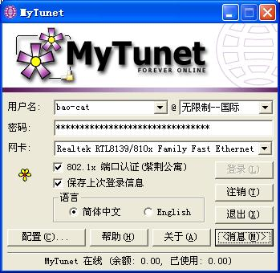

若 MyTunet 无法正常运行，麻烦您留言告诉我们，或者直接与我们联系。
MyTunet For Windows (2005.12.18)
简介 下载简洁版 下载完整版
简洁版 = 完整版 - IP 地址切换工具 - Windows 802.1x 登录计算器
重要说明：升级至新版本前请删除旧版本程序所在文件夹，不要覆盖旧文件升级。
应用户要求，已将“官方版”从压缩包中去除。获取官方版请访问 usereg。
最新版本增加了对 Windows XP 64 位系统的支持。
校园网常见问题的解决方法 Updated
特别感谢 Rydia（谭国铭）设计界面！

MyTunet For Linux (2005.12.09) 简介（一定要看！）
目前已知但还未解决的问题：运行 MyTunet 时，必须保证当前登录用户有管理员组（Administrators 或 root）的权限。这是由于登录过程中需要直接读写网卡，如果没有管理员权限，将导致程序运行失败。这个问题理论上讲……无法解决 -_-
友情链接：流行音乐在线